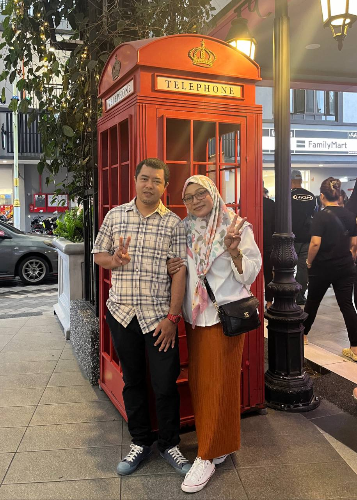
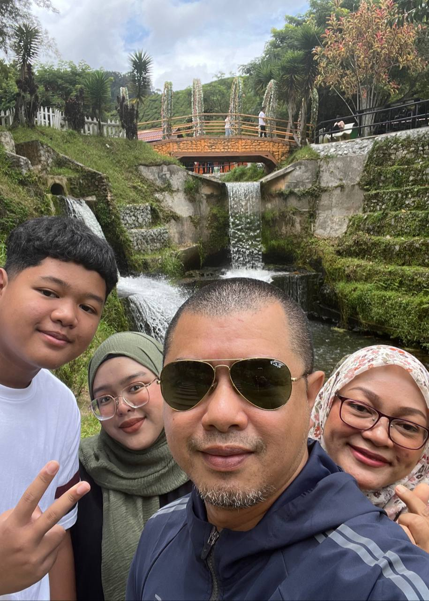
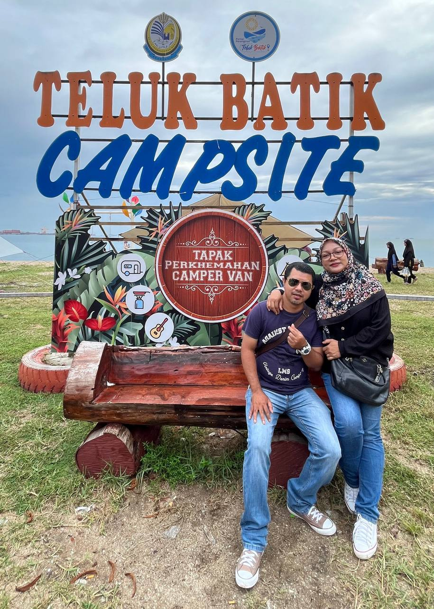

This is my beloved family!
My father name is Affendi bin Kamis, he born on 4 November 1976.
While my mom name is Sharifah binti Amenudin, and born on 20 October 1979.
Last but not least, my younger brother Muhammad Aidil Irfan bin Affendi, born on 5 August 2010.
I only have 2 siblings and I am the eldest.



All of us have the same interest,
which is, our family really love to go on vacation or camping.
Also, we love to hunt for restaurant and food!
Throwing back this pictures of our family during
Hari Raya Aidilfitri 2024!
I will forever cherish this moment <3
I really hope that I will never lose one of them.